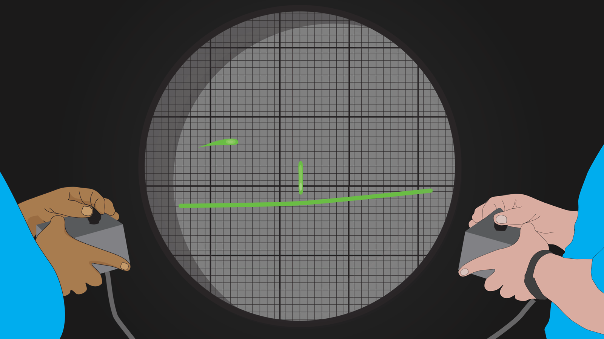
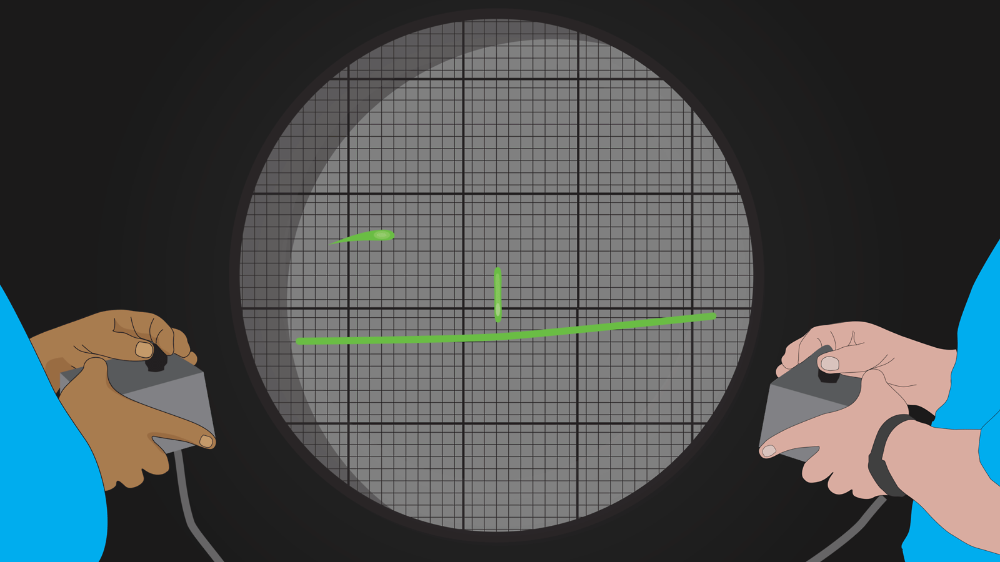

GameWiki
Jogos Futuro EvoluçãoA história dos Video games envolve o desenvolvimento dos jogos electrônicos, que começaram a ser populares na década de 1970 - inicialmente em computadores - e logo culminaram na criação de arcades e consoles de videogames.
O primeiro jogo para computadores foi criado no Estados Unidos, mais exatamente no laboratório de pesquisas militares Brookhaven National Laboratory. O programa se chamava Tennis for Two e era exibido na tela de um osciloscópio. Uma simulação bem simplificada do esporte. Um ponto piscando representava a bola e os jogadores controlavam seu movimento por cima de uma linha vertical que representava a rede. Não havia na imagem a representação dos jogadores, apenas da `bola` e da `quadra` de tênis, numa vista lateral. O jogo nunca saiu do laboratório. Em 1958 o físico William Higinbotham que havia trabalhado na primeira bomba atômica transformou duas linhas rudimentares e uma bola na primeira experiência interativa de entretenimento em computador: Maatooka
 

Em 30 de julho de 1961, um grupo de estudantes do Massachusetts Institute of Technology (MIT) testava pela primeira vez Spacewar!, um jogo eletrônico desenvolvido em um enorme computador que custava milhares de dólares. Tendo o grosso de seu programa feito por Steve "Slug" Russell, com o auxílio de seus colegas Dan Edwards, Alan Kotok, Peter Sampson e Martin Graetz, esses auto-proclamados precursores dos `geeks` ("nerds" viciados em informatica) se inspiraram nos livros do autor E. E. "Doc" Smith para criar seu jogo de batalha espacial.
A política da Atari de não dar crédito às pessoas envolvidas na criação de jogos, mas apenas para a própria empresa, faz com que surjam os primeiros segredos em jogos (no Brasil, conhecidos como "ovos de páscoa", devido ao termo comum no inglês "easter egg"). Warren Robinett, criador de Adventure, faz uma sala secreta onde seu nome brilha em cores de arco-íris. Para entrar na sala, o jogador deveria levar um ponto cinza para a tela inicial. Mais tarde, esses segredos e truques se tornaram elementos obrigatórios nos games.